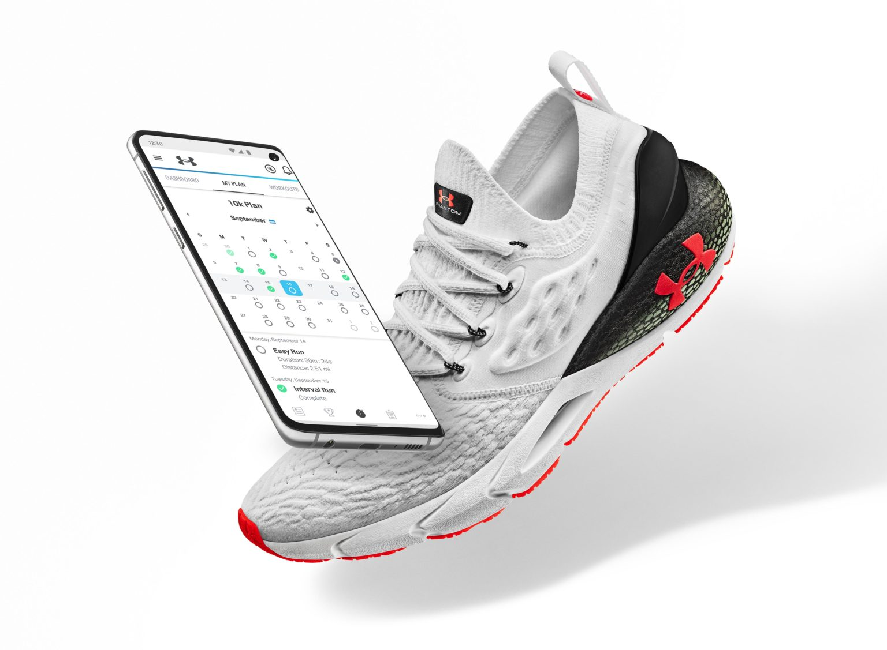
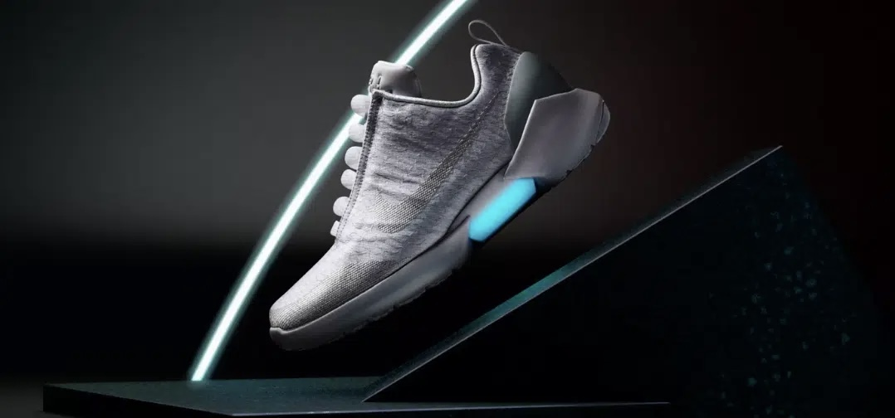
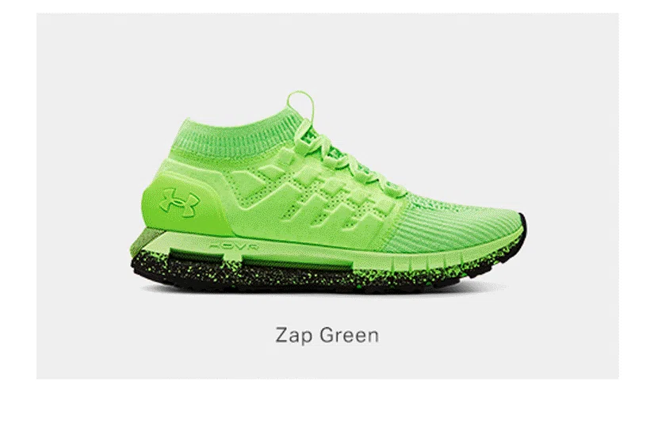
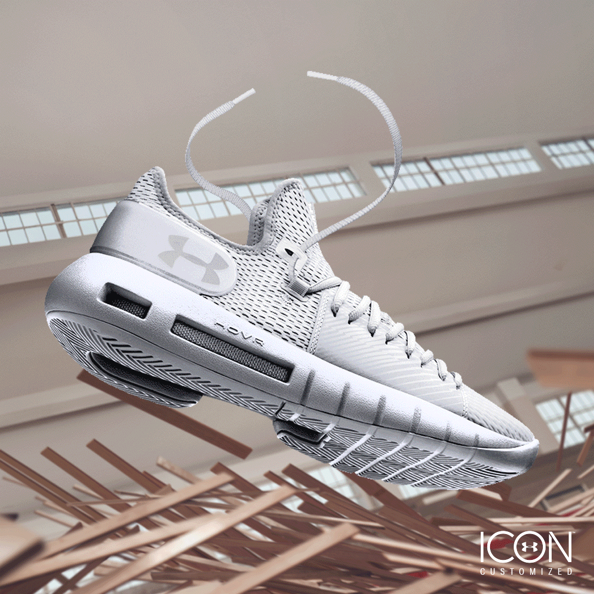

Bienvenue sur Hovr Phantom 2


Que vous soyez novice en course à pied ou que vous cherchiez à ajouter quelques kilomètres à votre entraînement hebdomadaire, la nouvelle UA HOVR ™ Phantom 2 est la chaussure de course la plus polyvalente à ce jour, conçue pour vous aider à atteindre vos objectifs cet automne.
La nouvelle Under Armour HOVR Phantom 2 est arrivée, actuellement classée comme la chaussure de course la plus polyvalente de la marque. Suite à la conception de ses versions précédentes, avec une construction de la semelle supérieure et de la semelle intermédiaire HOVR identique, une série d'améliorations sont introduites en termes de rembourrage, d'ajustement et de confort du modèle.

